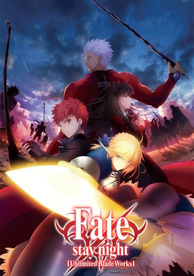
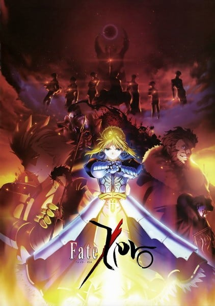
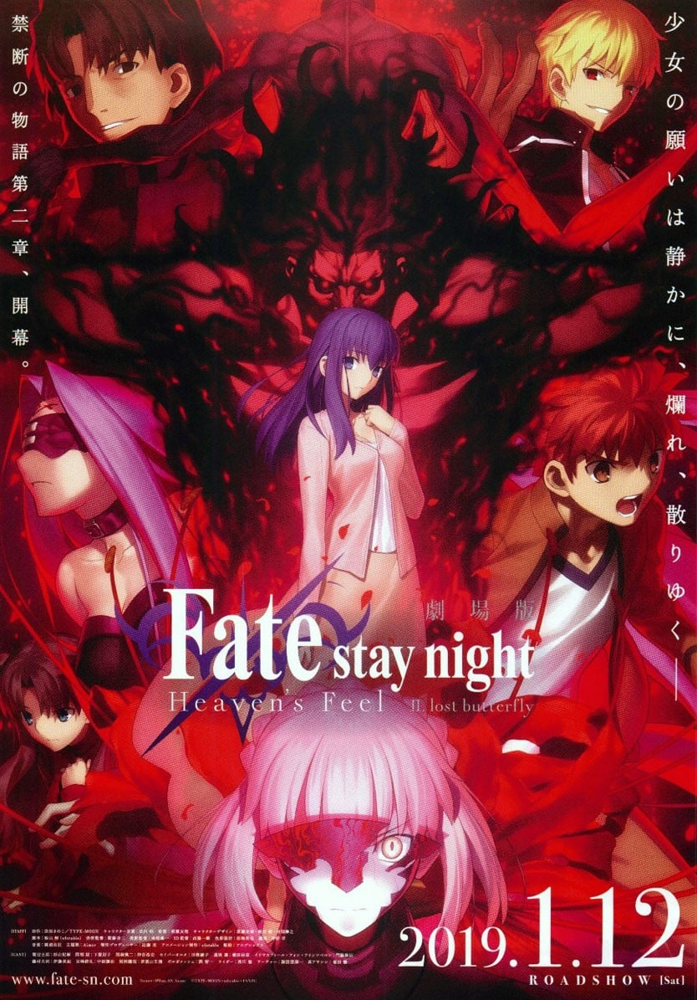
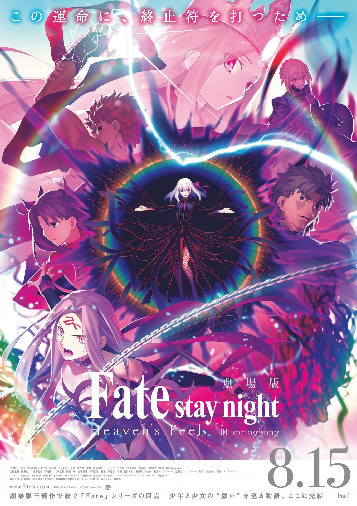

题材交叉
既在「高分热血动漫推荐」，也在「高分恋爱动漫推荐」。

7.5「Fate/stay night [Unlimited Blade Works]」（2014）是一部TV，由三浦貴博执导，制作ufotable，类型包括战斗、奇幻、热血，评分7.5，在本站出现在6份片单中，例如高分热血动漫推荐、高分恋爱动漫推荐、高分奇幻冒险动漫。页面只做片单对照，不提供播放。舞台は海と山に囲まれた都市・冬木市。 そこで行われる、ある一つの儀式。 手にした者の願いを叶えるという聖杯を実現させる為、聖杯に選ばれた七人の魔術師に、聖杯が選んだ七騎の使い魔を与える。 騎士 "セイバー" 槍兵 "ランサー" 弓兵 "アー。
既在「高分热血动漫推荐」，也在「高分恋爱动漫推荐」。
可以从「ufotable作品推荐」走进同一工作室。

8.1按共享片单数排序，用来找和「Fate/stay night [Unlimited Blade Works]」一起出现的高分动漫。

7.8
7.9 8.0
8.0